Bake as Layer/Mask¶
When creating a new layer or mask, there are options to bake various data as an image layer.
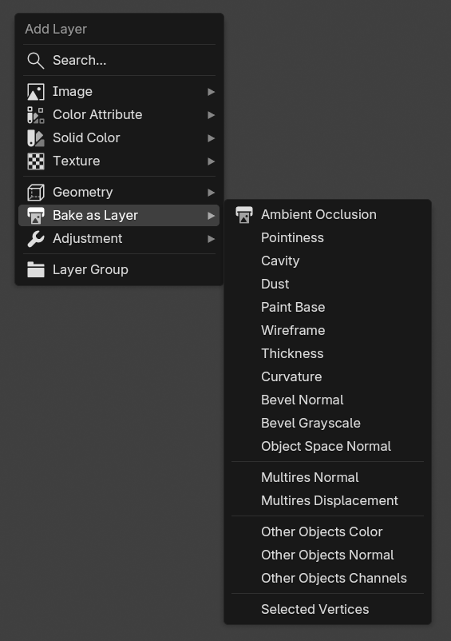 |
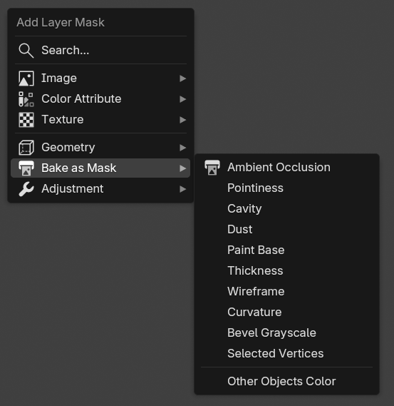 |
|---|---|
| Bake as Layer Menu | Bake as Mask Menu |
The bake process can take a while depending on your system. You can see how it works in the video below.
| Bake Bevel Normal as an image layer |
Rebake¶
After you edit the mesh or the scene, sometimes you want to rebake the layer. The easiest way to do it is by pressing the Rebake button in the layer/mask source panel.
Rebake using Rebake Button |
Be aware if you already have baked data (Bevel Normal for example) and you want to bake the same data type again, the default behavior is Ucupaint will overwrite the already baked data. To disable this, you can disable the Overwrite option in the bake dialog box.
Batch Rebake¶
If you already have multiple baked data, and want to edit the mesh or scene again, rather than pressing the Rebake button one by one for each baked image, you can just press Rebake All Baked Images, this will rebake all baked layers/masks in the Ucupaint node. The process can take a while depending on how much data you already baked.
Rebake AO and Bevel Normal at the same time using Rebake All Baked Images Button |
Baked Texture Types¶
There are several texture types that can be baked to a layer:
AO¶
AO (Ambient Occlusion) can darken the valleys or creases of your mesh. You can use options such as distance and local only.
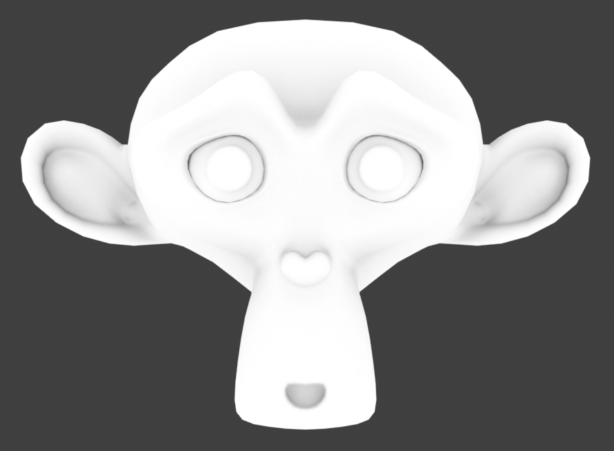 |
|---|
| AO |
Pointiness¶
Pointiness will highlight the valleys and ridges of your mesh. Pointiness will use a 32-bit float image by default since it needs more precision.
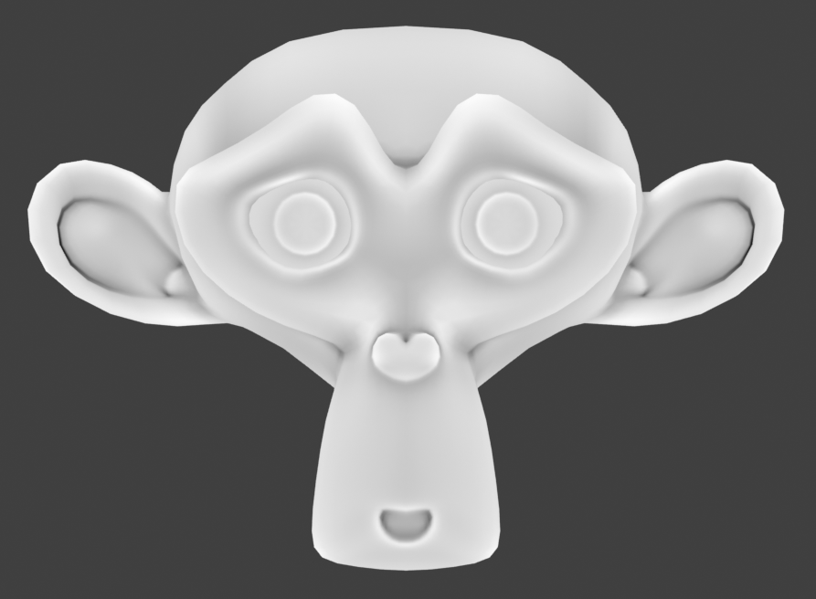 |
|---|
| Pointiness |
Curvature¶
Curvature is similar to pointiness, with different valley and ridges behavior. It uses 8-bit image by default so smaller file size.
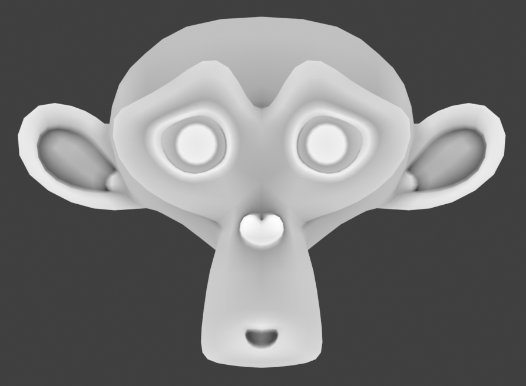 |
|---|
| Curvature |
Cavity¶
Similar to pointiness and curvature, cavity will show valleys and ridges but with darker grayscale levels. It also uses an 8-bit image by default.
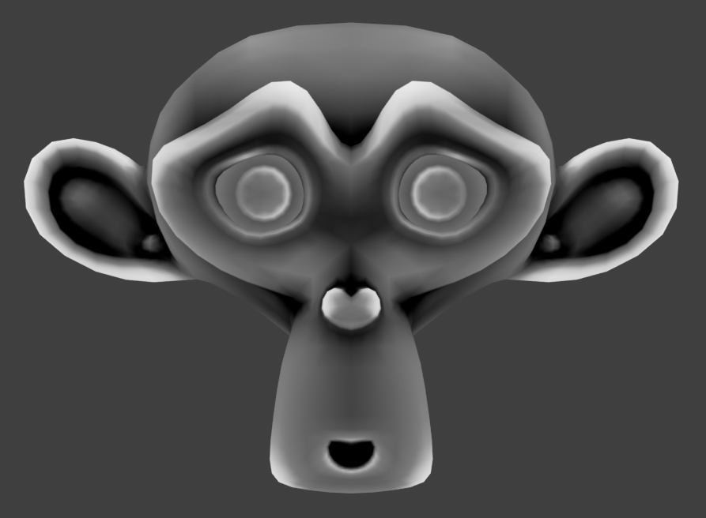 |
|---|
| Cavity |
Dust¶
Dust is similar to the cavity map but adds additional Z top normals to the mix.
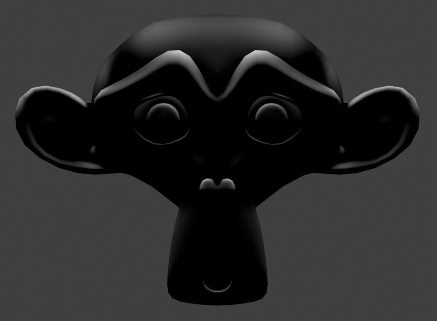 |
|---|
| Dust |
Paint Base¶
Sometimes also referred to as the Blizzard or Dota diffuse map. This bake combines a dirt map with a vertical gradient and top-facing normals with a highlight. Credit to Danyl Bekhoucha for the shader setup. This bake is a good starting point for character texture maps.
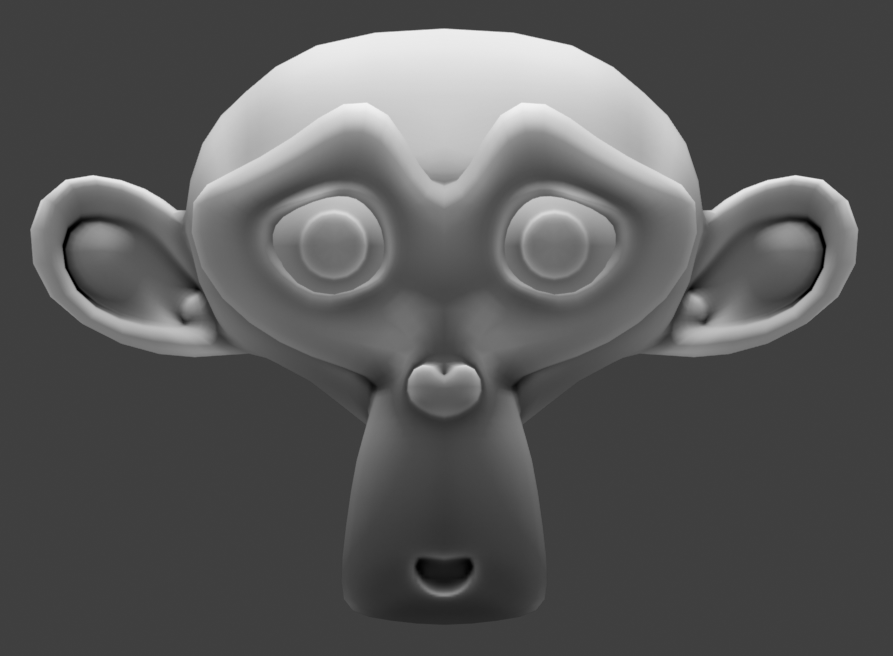 |
|---|
| Paint Base |
Thickness¶
Thickness will bake the thickness of the mesh. Internally, it uses the inverted normal AO to achieve the thickness.
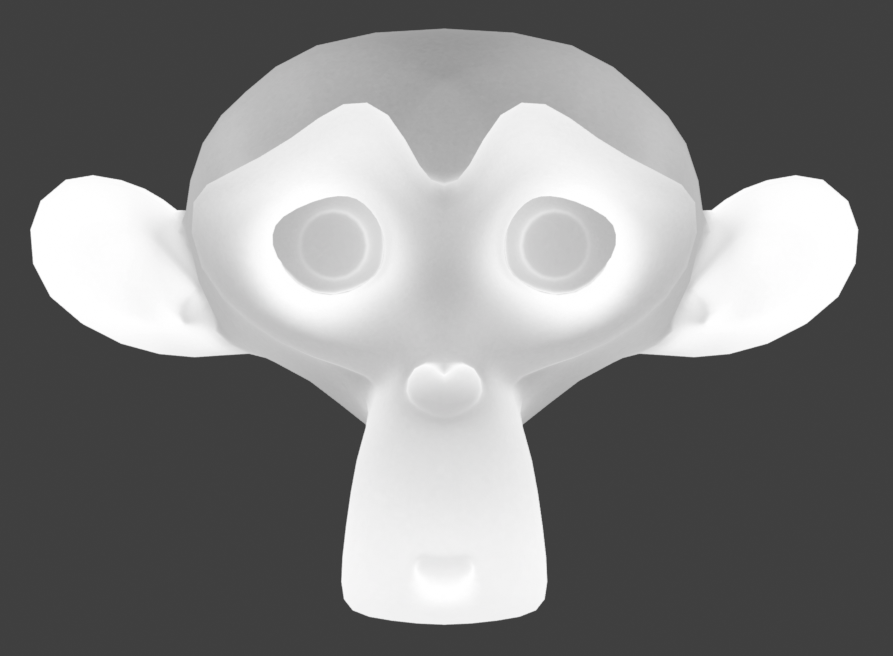 |
|---|
| Thickness |
Wireframe¶
Wireframe will bake the wireframe of the mesh.
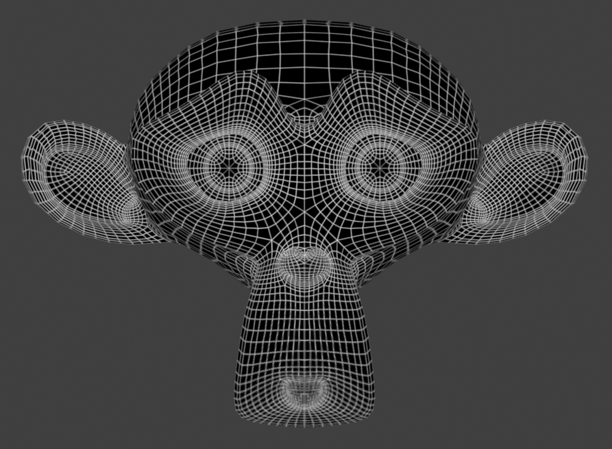 |
|---|
| Wireframe |
Bevel Normal¶
Bevel normal map in tangent space. This will bake bevel on sharp edges.
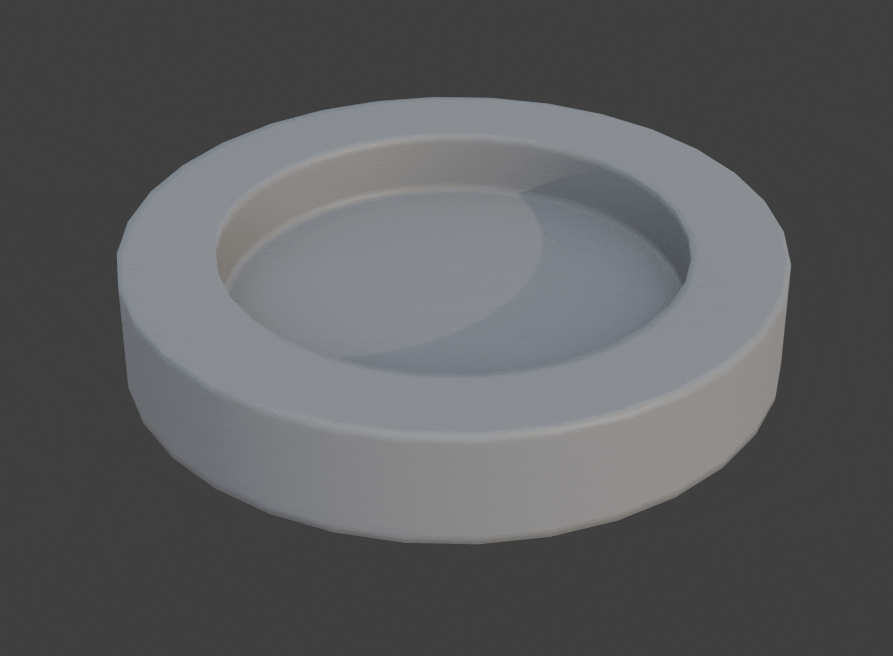 |
|---|
| Bevel Normal |
Bevel Grayscale¶
Grayscale bevel of the mesh.
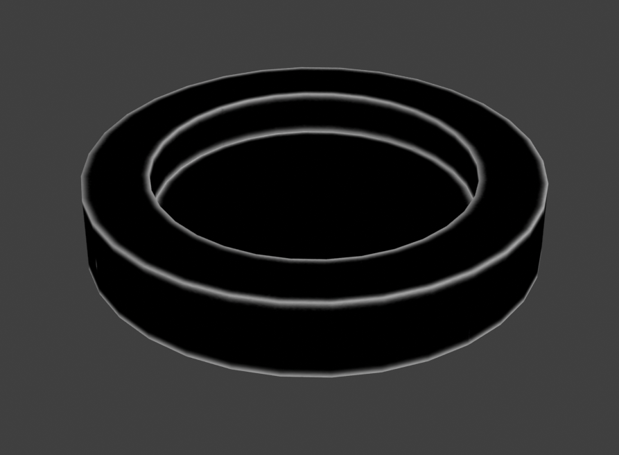 |
|---|
| Bevel Grayscale |
Multires Normal¶
This will bake the highest level of multires to a normal map.
| Bake Multires Normal Demo |
Multires Displacement¶
This will bake the highest level of multires to a displacement/bump map.
| Bake Multires Displacement Demo |
Other Objects Normal¶
This will bake the surface normal of other non-active selected objects to a normal map.
| Bake Other Objects Normal Demo |
Other Objects Color¶
This will bake the color of other non-active selected objects to a color map.
| Other Objects Color |
Other Objects Channels¶
This will bake the principled BSDF channels of other non-active selected objects to ucupaint channels.
Selected Vertices¶
This will bake the selected vertices to white color while other vertices will be black. This can be useful for masking.
| Bake Selected Vertices as Mask Demo |